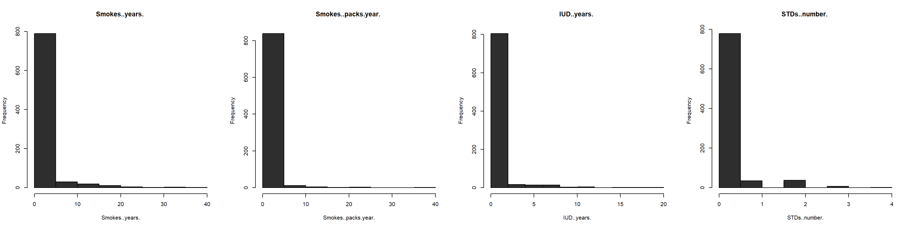
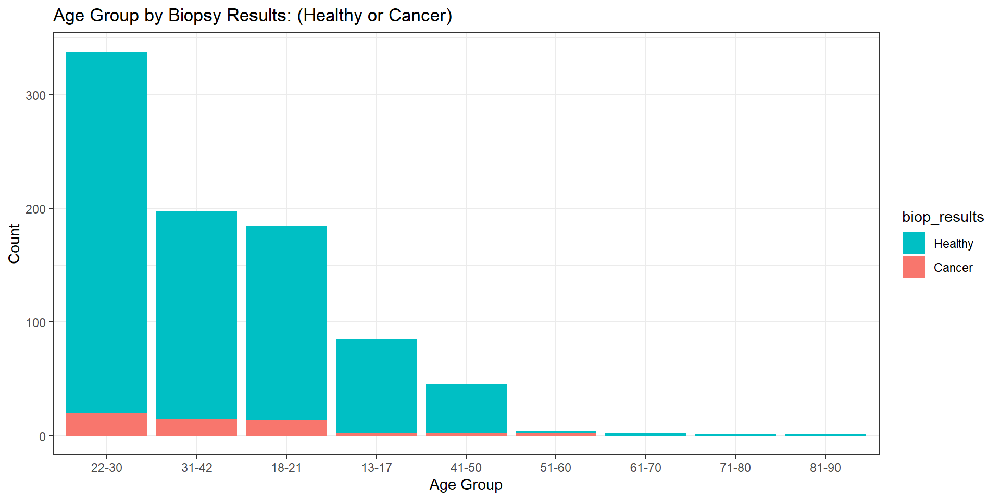
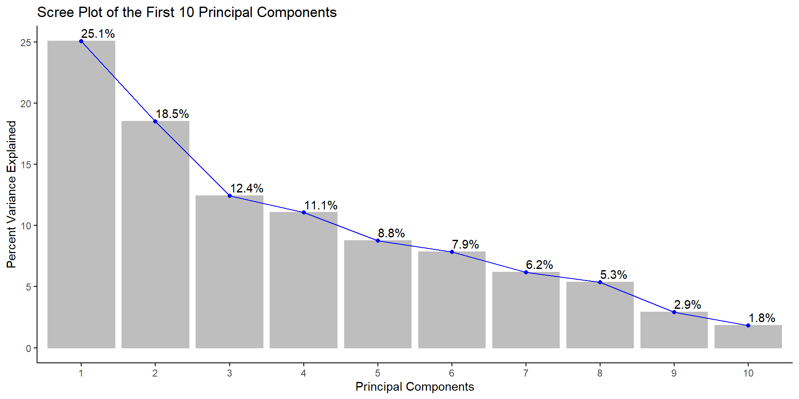
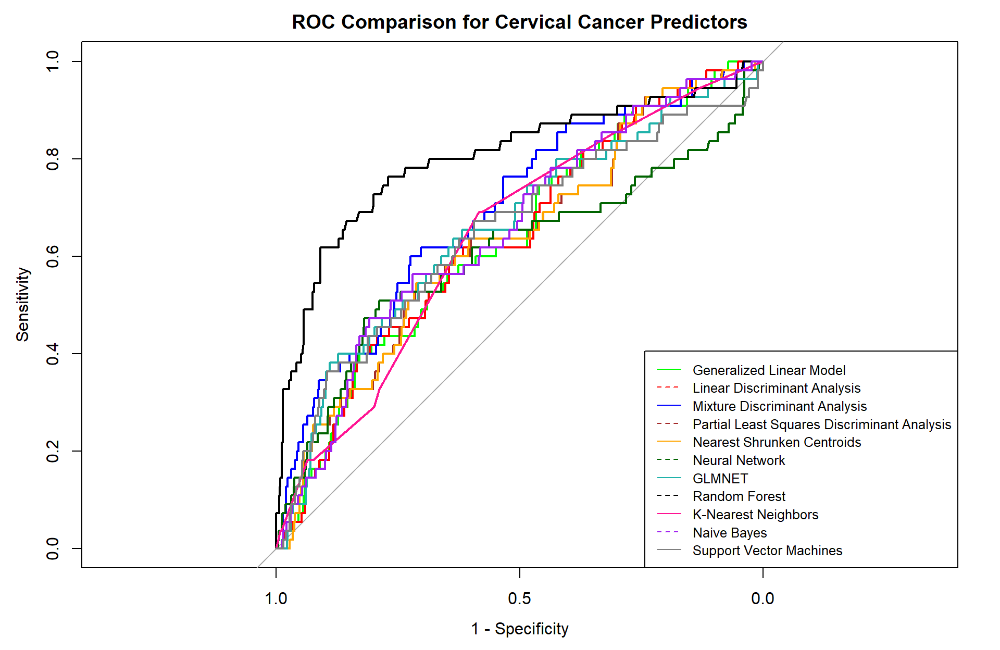

Code: R Programming - Appendix
A thorough protocol for cervical cancer detection hinges on cytological tests in conjunction with other methodologies; we narrow our focus to patients that are healthy vs. unhealthy (those with positive biopsy results). Our predictive modeling endeavor stems from the selection of 858 female patients ages 13-84 from a Venezuelan inpatient clinic. The data is preprocessed, subjected to principal component analysis, and feature selection based on removal of highly correlated and near zero variance predictors. The data is subsequently partitioned using an 80:20 train-test split ratio to evaluate the model performance of data outside the training set. The class imbalance scenario whereby the majority of cases (healthy) is rebalanced with down sampling. We thereby propose eleven algorithms to aide in establishing the likelihood of being diagnosed with cervical cancer. Results vary based on key performance indicators of the receiver operating characteristics’ areas under their curves. Furthermore, each model is holistically evaluated based on its predictive ability. We focus on the highest true negative rate (specificity) to balance our selection with the highest performers.
Keywords: cervical cancer, machine learning, ensemble methods, predictive modeling
Cancer is responsible for millions of deaths across the world. Cervical cancer, cancer that starts in the cervix, is a risk that is unique to women. According to the Centers for Disease Control and Prevention, the main cause of cervical cancer is HPV and while at least fifty percent of sexually active people will contract HPV at some point, only a small percentage of women will develop cervical cancer. Other risk factors including smoking, birth control pills, birth to three or more children, and multiple sexual partners (Centers for Disease Control and Prevention [CDC], 2021). Cervical cancer has a relatively higher survival rate when found early. Therefore, recognizing early symptoms can save lives. Thus, it is important that we understand the causes of cervical cancer to better interpret screening tests and make recommendations visa vie predictive modeling where applicable.
We begin this endeavor by selecting relevant libraries useful to our analytical approach and reading in (importing) the dataset as a flat .csv file into the RStudio environment. Observing the structure of the dataset is crucial in uncovering each variable’s behavior. To this end, all columns (variables) are converted to integers since our analysis will make predictions from numerical data. The dataset is further inspected for any missing values. 3,622 such values are uncovered, and subsequently imputed by the median value in each respective column. Our smoothing methodology relies on taking a “middle-ground” approach, thereby allowing for a representative sample. Attempting to impute the missing data using any other approach (i.e., K-Nearest Neighbors) yields negative values, and does not provide meaningful results. For example, smoking and pregnancies cannot and should not have negative values. Furthermore, the dataset is examined for near zero variance columns. Kuhn & Johnson (2016) assert that “some models can be crippled by predictors with degenerate distributions” (Kuhn & Johnson, 2016, p. 44). Whereas some variables (i.e., smoking) might be intrinsically linked to cancer detection visa vie inherent correlative relationships, we nonetheless omit them based upon this prescribed methodology. Figure 1 below shows four of the first such degenerate variable distributions.
Figure 1
Four Variables with Degenerate Distributions
 Note. All four independent variables exhibit long tail (right-skewed) distributions.
At this stage, we proceed to examine the distribution of female patients ages 13 to 84. The median age of females represented in this study is 25 years old, with the mean being 27 years old (rounded to the nearest whole number). The variability about the median (interquartile range) of 12 years old is the range of the middle half of the data. Since the mean is larger than the median by approximately two years, this distribution is skewed to the right. Our goal is to describe the number of females in each age group with positive or negative test results. Figure 2 illustrates these numbers via histogram plot. We see that most patients in this study are females (aged 20 to 30), with each increased age group descending to lower proportions. However, we are not interested in only the count of females in each age group. Thus, further inspection of the demographics discussed in this paper yields biopsy results by each respective age group. Figure 2 provides this breakdown by age via overlayed histogram plot.
Figure 2
Age Group Distribution by Biopsy Results: (Healthy or Cancer)

Note. Higher age groups capture a lower presence (quantity) of female patients in this dataset. Patients whose results came back negative are represented by the light blue color, whereas patients who tested positive for cervical cancer are represented by the reddish color. It is important to note that the dataset in its entirety includes three columns (Citology, Schiller, and Hinselmann) pertaining to various screening and diagnostics of cervical cancer. Each carries with it a magnitude of importance in this endeavor. For example, “Hinselman is a test method for cervical cancer by examining the cells on an instrument called colposcope” (Rustam et al., 2019, p. 5). Rustam et al. propose algorithms that combine all three metrics into one target variable with varying levels (0–4), thereby creating a multiclass classification problem operated on a Gauss-Newton Representation Based Algorithm that produces “Stratified KFold and Shuffle Split” (Rustam et al., 2019, p. 8). We, on the other hand, narrow our focus to one final target variable (biopsy results). This column produces binary responses of either 0 or 1. These values are converted from dummy variables with the idea or notion that the former equates to no cancer (healthy – or negative result), and the latter equates to a positive result, cancer. Table 1 places these results into a contingency table. Herein, a substantial class imbalance problem is uncovered. The majority of biopsy results (803) return healthy, whereas only a substantially smaller portion of (55) results return positive. The largest count (20) is attributed to the 22 to 30 age group, thereby suggesting that there exists a higher prevalence of positive test results for females in this age demographic.
Table 1
Biopsy Results by Age Group
| 13-17 | 18-21 | 22-30 | 31-42 | 41-50 | 51-60 | 61-70 | 71-80 | 81-90 | Total | |
|---|---|---|---|---|---|---|---|---|---|---|
| Healthy | 83 | 171 | 318 | 182 | 43 | 2 | 2 | 1 | 1 | 803 |
| Cancer | 2 | 14 | 20 | 15 | 2 | 2 | 0 | 0 | 0 | 55 |
| Total | 85 | 185 | 338 | 197 | 45 | 4 | 2 | 1 | 1 | 858 |
Note. Females of age group 22 to 30 not only capture the largest portion of the data (about 40%), but they also exhibit the highest prevalence of positive (cancer) biopsy test results.
While various dimensionality reduction techniques can be combined to produce a refined, yet viable dataset prepared for model induction, we rely on removing near zero variance columns and highly correlated predictors. The preprocessing steps prescribed herein identify 20 near zero variance predictor columns that are subsequently omitted from our analysis. Furthermore, the removal of two highly correlated predictors “STDs” and “STDs.condylomatosis” follows suit. Trimming the dataset down to twelve columns visa vie feature extraction and feature selection reduces the dimensions by a total of 24 columns, providing a remedy to overfitting.
Approximately 19.8 % of the variance in the data is explained by the first principal component; thus, the effective dimension is one. This is supported by and demonstrated in the ensuing scree plot in Figure 3 which visually depicts “the percentage of the total variance explained by each component” (Kuhn & Johnson, 2016, p. 38). Moreover, herein, a pattern of numerical descent is detected – with each ensuing principal component capturing a progressively lower percentage of variability in the data. Similarly, the delta in each percent variance becomes progressively reduced, until there is almost no difference between the percent variance in eachprincipal component.
Figure 3
Scree Plot of the First 10 Principal Components

Note. This in turn creates a reduction in the dimensionality, until principal component 10 is reached, where only 2.9% variance exists.
The performance and predictive ability of an effective model hinges on its ability to operate on unseen data. In other words, this “procedure used to estimate the performance of machine learning algorithms when they are used to make predictions on data not used to train the model” (Brownlee, 2020). We split the dataset into an 80:20 train-test ratio with the majority of cases being allocated to the training set. Predictors and the target variables are assigned to their own unique data frames, making it easier to separate each and allocate to the appropriate train and test samples, respectively. We recall 803 females were found to be healthy post biopsy, whereas only 55 showed signs of cancer. Keeping in mind that most cases (803) are healthy, we cannot (without addressing this critical dilemma) commence modeling for the following reasons. Any prediction made from the data in its current state will yield in favor of healthy cases, resulting in a true negative rate (specificity) of 0%. Inspecting the biopsy target variable yields findings commensurate with a class imbalance scenario. We hereby propose a solution to offset the class imbalance via down-sampling to “randomly subset all the classes in the training set so that their class frequencies match the least prevalent class … (so that only 40% of the total training set is used to fit the model)” (Kuhn, 2019).
Our models rely on the metric receiver operating characteristic (ROC) to measure performance by calculating the area under each curve. This is controlled by the two-class summary within the summary function of the train control parameters. These parameters rely on leave-group-out cross-validation (LGOCV), otherwise known as Monte Carlo cross-validation to create “multiple splits of the data into modeling and prediction sets” (Kuhn & Johnson, 2016, p. 71). This is prescribed to repeated train-test splits. Moreover, class probabilities are computed, and predictions are saved through the save predictions argument.
We begin our modeling endeavor by implementing a basic model for logistic regression. The three components that are standard to any GLM include the random component, systematic component, and link function. The random component assumes the probability distribution of the response variable. Systematic components specify the predictor variables \((x_1,x_2,...,x_k)\) which enters a linear combination to form a linear predictor, \(\beta_0+\beta_1X_1+\beta_2X_2+...+\beta_kX_k\). The link function refers to the relationship between the systematic component and the mean of the random component. These three components vary depending on the model. There are certain advantages to GLM over the traditional regression model. Maximum likelihood is used to fit models and we do not have to transform the response variable to have a normal distribution. We fit the model using the training set of the biopsy results. Mathematically, this is expressed:
\[\hat{p}(y) = \frac{\text{exp}(b_0+b_1x_1+\cdot\cdot\cdot+b_px_p)}{1+\text{exp}(b_0+b_1x_1+\cdot\cdot\cdot+b_px_p)}\] Our multivariate analysis identifies one statistically significant predictor (the length of time associated with hormonal contraceptive use with a p value of 0.02). Thus, we have:
\[\hat{p}(y) = \frac{\text{exp}(b_0+b_1(Hormonal.Contraceptives..years.)}{1+\text{exp}(b_0+b_1(Hormonal.Contraceptives..years.)}\]
The premise for our next model is based on “minimizing the total probability of misclassification, which depends on class probabilities and multivariate distributions of the predictors” (Kuhn & Johnson, 2016, p. 287). Linear discriminant analysis “assumes a distribution of the predictor data such that the class specific means are different (but the covariance structure is independent of the classes)” (Kuhn & Johnson, 2016, p. 331). It addresses many of the limitations of logistic regression, estimating statistical measures of the data for each class. The value-added benefit is that “the between-predictor correlations are explicitly handled by the model. This should provide some advantage to LDA over logistic regression when there are substantial correlations” (Kuhn & Johnson, 2016, p. 292). Like the generalized linear model, we train the model over the same train control parameters, centering and scaling it as an additional method of preprocessing. However, we change the method inside the function to “lda” to ensure that we do not repeat the same metrics as the generalized linear model.
Our next method relies on a nonlinear form of discriminant analysis, mixture discriminant analysis, which builds upon the former. While this method allows each class (healthy or cancer) to be represented by more than one multivariate normal distribution, “like LDA, the covariance structures are assumed to be the same” (Kuhn & Johnson, 2016, p. 331). MDA modifies \(Pr[X|Y = cancer]\), the probability of observing predictors \(X\) given class \(Y\) = cancer, aggregating distributions specific to a given class into one “multivariate normal distribution by creating a per-class mixture” (Kuhn & Johnson, 2016, p. 331). The discriminant function for the lth class below is proportional to the “kth subclass in the lth class” (Kuhn & Johnson, 2016, p. 331). This is expressed as
\[ D_\ell(x) \propto \Large\sum_{k=1}^{L_\ell} \phi_{\ell k}D_{\ell k}(x)\] We tune our hyperparameters by expanding our grid with subclasses from one to eight and change our method to “mda.”
We next implement the partial least squares discriminant analysis (PLSDA) algorithm for its multivariate dimensionality-reduction versatility, predictive and descriptive modeling, and discriminative variable selection. This can be thought of as a “supervised” version of principal component analysis (PCA) in the sense that it achieves dimensionality reduction but with full awareness of the class labels. We cannot directly implement the partial least squares regression algorithm where our “factor variable is used for the outcome” (Kuhn & Johnson, 2016, p. 320). Therefore, our use case for this model hinges on its adaptability for dimensionality-reduction, feature selection, and classification. Like partial least squares regression, the tuning parameters include the number of dimensions or number of components. Thus, we expand our grid to accommodate the first ten principal components. We rely on the estimation of the classification error rate using the cross-validation.
Nearest shrunken centroids make use of predictive analysis for microarrays (PAM) to solve a classification problem in a high-dimensional space. This method makes one important modification to standard nearest centroid classification. It shrinks each of the class centroids toward the overall centroid for all classes by an amount we call the threshold. The nearest shrunken centroid method has one tuning parameter: shrinkage. We define this threshold from zero to ten in a data frame which we assign to a tuning grid. The shrinkage consists of moving the centroid towards zero by threshold, setting it equal to zero if it hits zero (Kuhn & Johnson, 2016, p. 307).
Whereas this model’s architecture can be used for regression, we implement it for classification. Herein, the layers are made of nodes. A node is just a place where computation happens, loosely patterned on a neuron in the human brain, which fires when it encounters sufficient stimuli. A node combines input from the data with a set of coefficients, or weights, that either amplify or dampen that input, thereby assigning significance to inputs regarding the task the algorithm is trying to learn (i.e., determining which input is most helpful is classifying data without error). These input-weight products are summed, and the sum is passed through a node’s “so-called” activation function, to determine whether and to what extent that signal should progress further through the network to affect the ultimate outcome, say, an act of classification. If the signals pass through, the neuron has been “activated.” The train function is applied, preprocessing the algorithm by centering and scaling, with one additional parameter. Herein, we minimize the sensitivity to outliers by assigning the data transformation parameter of spatial sign (Kuhn & Johnson, 2016, p. 34). Moreover, the train function “provides a wrapper to this function to tune the model over the amount of weight decay and the number of hidden units” (Kuhn & Johnson, 2016, p. 361).
Penalized models utilize penalties (or regularization) to improve the fit to the data, such as ridge regression, lasso, and elastic net. GLMNET is a package that fits generalized linear and similar models via penalized maximum likelihood. Since our first algorithm is the generalized linear model, we adapt this method for comparison. The regularization path is computed for the lasso or elastic net penalty at a grid of values (on the log scale) for the regularization parameter lambda. The algorithm is extremely fast, and can exploit sparsity in the input matrix x. It fits linear, logistic, multinomial, Poisson, and Cox regression models. Moreover, it can fit multi-response linear regression, generalized linear models for custom families, and relaxed lasso regression models. The package includes methods for prediction and plotting, and functions for cross-validation. Kuhn & Johnson (2016) propose a straightforward approach for regularization in taking a “squared penalty function to the log likelihood and find parameter estimates that maximize” (Kuhn & Johnson, 2016, p. 303). The expression becomes:
\[\log L(p)-\lambda \Large\sum_{j=1}^p\beta_j^2. \] In tuning our hyperparameters we regularize with ridge, lasso, and elastic net simultaneously while taking the absolute values of the regression coefficients; the expression is refined to:
\[\log L(p) -\lambda \left[ (1-\alpha) \frac{1}{2} \Large \sum_{j=1}^p{\beta_j^2+\alpha \Large \sum_{j=1}^p |\beta_j|} \right] \] (Kuhn & Johnson, 2016, p. 303), where 𝛼 is a vector of values (0, .1, .2, .4, .6, .8, 1), and lambda is a sequence (.01, .2) with a defined length equal to 40.
Random forest algorithm creates decision trees on data samples and then gets the prediction from each of them, aggregates the votes from different decision trees to decide the final class of the test object, and finally selects the best solution by means of voting. It is an ensemble method which is better than a single decision tree because it reduces the over-fitting by averaging the result. Additionally, the benefits of this algorithm are not limited to the default hyperparameters it uses often produce a good prediction result. Understanding the hyperparameters is straightforward, and there are not that many of them. The main limitation of random forest is that many trees can make the algorithm too slow and ineffective for real-time predictions.
We deploy this method for its propensity to separate the data based into boundaries to predict the classification of new samples. Since this algorithm relies on distance for classification, if the features represent different physical units or come in vastly different scales, then normalizing the training data can improve its accuracy dramatically. This model “takes a different approach by using a sample’s geographic neighborhood to predict the sample’s classification using the K-closest samples from the training set. ‘Closeness’ is determined by a distance metric, like Euclidean and Minkowski and choice of metric depends on predictor characteristics” (Kuhn & Johnson, 2016, pp. 351-352).
This classification technique is based on Bayes’ Theorem where the probabilities of the predictor values are assumed to be independent of the others (Kuhn & Johnson, 2016, p. 354). We select this algorithm for its relative ease in implementation and find it to be useful for large data sets. Along with simplicity, Naïve Bayes is known to outperform even highly sophisticated classification methods. Bayes’ theorem provides the following method of calculating the posterior probability \(P(c|x)\) from \(P(c), P(x)\) and \(P(x|c):\)
\[P(c|x)=\frac{P(x|c)P(c)}{P(x)}\] \[P(c|X)=P(x_1|c) \space \text{x} \space P(x_2|c) \space \text{x} \space \dotsb \space \text{x} \space P(x_n|c) \space \text{x} \space P(c) \] where \(P(c|x)\) is the posterior probability of class (\(c\), target) given predictor (\(x\), attributes), \(P(c)\) is the prior probability of the class, \(P(x|c)\) is the likelihood, which is the probability of the predictor given the class, and \(P(x)\) is the prior probability of the predictor. Therefore, we have:
\[P(cancer|X) = P(x_1|cancer) \space \text{x} \space P(x_2|cancer) \space \text{x} \space \dotsb \space \text{x} \space P(x_n|cancer) \space \text{x} \space P(cancer) \]
which simplifies to:
\[\normalsize P[X|Y = cancer] = \Large \prod_{j=1}^P \normalsize P[X_J|Y = cancer]\]
We implement support vector machines for their ability to take the data points within a dataset and generate a hyperplane that best separates them by two classes. The margin is used to calculate performance by taking the “distance between the classification boundary and the closest training set point” (Kuhn & Johnson, 2016, p. 343). The maximum margin classifier is often referred to as the support vector machine (Kuhn & Johnson, 2016, p. 345). Our data is evaluated using the radial basis function kernel, tuning the hyperparameters in the following manner. The cost parameter “is the primary mechanism to control the complexity of the boundary” (Kuhn & Johnson, 2016, p. 346). We therefore select an increased cost sequence commensurate with the model’s propensity to correctly classify a larger portion of training data.
We begin our analysis by measuring the receiver operating characteristic of each respective model from the training set. Figure 5 depicts 11 ROC curves overlayed on one single plot. The curve situated over and above all the rest has the largest area under the curve (AUC), thus, having the highest performance.
Figure 5
ROC Comparison for Cervical Cancer Predictors
 Note. The random forest algorithm stands out in stark contrast to other algorithms as the model with the largest AUC of .8032, where the mean AUC is .6596.
However, performance alone on the trained data is insufficient to select a viable model because predictive ability is equally important, and to this end we must consider each model’s sensitivity and specificity, respectively. Whereas the sensitivity “of the model is the rate that the event of interest is predicted correctly for all samples having the event” (Kuhn & Johnson, 2016, p. 256), we are more concerned with specificity, the rate at which unhealthy (cancerous) samples are correctly predicted. Taking a balanced approach, we examine both metrics. Table 2 shows that the mean sensitivity is 0.6484. However, the class imbalance has shifted the event of interest from the target class of cancer to healthy. Therefore, on average, approximately 65% of cases are predicted as healthy. Naïve Bayes has the largest sensitivity (.7632) of any model. Our goal, however, is to determine the highest specificity. In so doing, we establish that the random forest model returns this value.
Table 2
Model Comparison Summary – Train
| Model Metrics | Minimum | Mean | Maximum | Model with Min. | Model with Max. |
|---|---|---|---|---|---|
| ROC | 0.5875 | 0.6363 | 0.6711 | K-Nearest Neighbors | Naïve Bayes |
| AUC | 0.6067 | 0.6596 | 0.8032 | Neural Network | Random Forest |
| Sensitivity | 0.5910 | 0.6484 | 0.7632 | K-Nearest Neighbors | Naïve Bayes |
| Specificity | 0.5055 | 0.5430 | 0.6327 | K-Nearest Neighbors | Random Forest |
Note. The maximum performance for the training set is attributed to the random forest model. However, concluding on a viable model at this stage would not elicit support to the endeavor at hand. The test set uncovers information which allows us to obtain a better understanding of the behavior of these algorithms on unseen data. At this stage, it is important to reiterate that, in our case, performance alone does not dictate the final model candidate. Table 3 highlights the same key performance indicators and predictive metrics, except adds accuracy into the mix, providing additional information not shown in the training set. However, we do not rely on this metric for our final assessment of optimal model performance.
Table 3
Model Comparison Summary - Test
| Model Metrics | Minimum | Mean | Maximum | Model with Min. | Model with Max. |
|---|---|---|---|---|---|
| Accuracy | 0.5731 | 0.6321 | 0.7836 | K-Nearest Neighbors | Naïve Bayes |
| Sensitivity | 0.5938 | 0.6574 | 0.8187 | K-Nearest Neighbors | Naïve Bayes |
| Specificity | 0.0909 | 0.2645 | 0.4545 | Random Forest | PLSDA |
Note. Partial least squares discriminant analysis boasts the maximum specificity of all models (0.4545). Thus, we this algorithm is preferred for its optimal model solution in terms of predictive ability.
While data science methods can mathematically impute missing data, solve minimization problems visa vie various forms of discriminant analysis, and summon a host of “willing and able” algorithms to identify patterns in data, deploying a host of models to operate quantitatively on a qualitative endeavor without understanding the problem at hand requires more breadth. Classifying cervical cancer biopsy results hinges on a better understanding of the qualitative features involved in not only predictive modeling, but cell biology, and patient demographics to name a few. The World Health Organization reported “an estimated 604 000 women were diagnosed with cervical cancer worldwide and about 342 000 women died from the disease” (World Health Organization [WHO], 2021). To this end, fostering a better understanding for the critical care involved in patient rights (i.e., privacy) will inevitably allow data scientists to communicate more effectively with stakeholders, bridging the gaps between algorithmic “black boxes,” level of care, and predictive reliability.